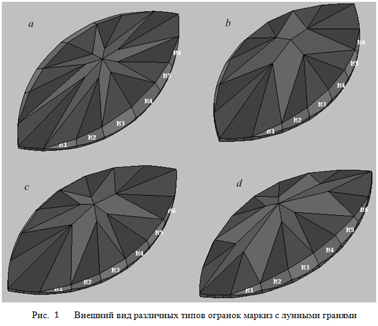
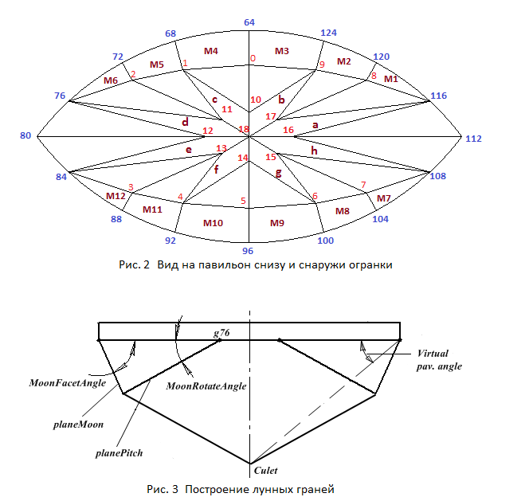

В данном разделе мы создадим модель огранки, которая носит название маркиз с лунными гранями. У огранок типа маркиз может присутствовать примыкающий к рундисту пояс граней называемых лунными (moon facets), которые получили такое название вследствие своего вида, напоминающего неполную луну. В своей книге Diamond Cutting ее автор, известный специалист в области огранки алмазов, Basil Watermeyer ввел название barion для огранок имеющих лунные грани. Это название он создал на основе двух имен – своего имени - Basil и имени своей жены – Marion, в знак своего уважения к ней. На рисунке 1 показано несколько огранок маркиз с различным расположением лунных граней и, кроме того, различающиеся их количеством. Лунные грани огранок на этих рисунках обозначены как M1, M2, . . . M6. В данном разделе мы создадим огранку имеющую павильон с лунными гранями и WBT-расположением главных граней павильона. Что такое WBT - смотри предыдущую главу.

На рисунке 2 показана нумерация вершин павильона огранки маркиз с лунными гранями и обозначением ее вершин. Корона огранки полностью совпадает с короной огранки маркиз без лунных граней и поэтому на рисунке не показана. Отметим, что так как на рисунке 2 изображен вид только павильона (корона рядом не показана), то поэтому павильон показан как если на него смотреть снизу и наблюдатель находится снаружи огранки. При таком виде павильона на рисунке мы можем легко соотнести нумерацию его вершин с нумерацией вершин в online-программе. Для маркиза без лунных граней павильон на рисунке (на том же рисунке присутствует и корона) был изображен так, как будто наблюдатель находится внутри огранки и при этом смотрит на павильон сверху.
var lw = 1.8; // Отношение длины огранки к ее ширине // Форма и толщиа рундиста var r = 0.05; // Толщина рундиста var vp = 0.0; // Угол, определяющий величину отклонения кривой от окружности // (смотри предыдущую главу) // Корона var beta = 35*DEGREE; // Угол короны var DeltaAngleCrown = -1.0*DEGREE; // Значение отклонения угла наклона короны var t = 0.60; // Ширина площадки var table_length = 0.72; // Позволяет изменять длину площадки вдоль оси X (смотри рис. 2) var starFacet = 0.5; // Задает положение средних вершин короны // Павильон var hp = 0.464; // Задает глубину павильона var hPavFacet = 0.8; // Определяет положение нижних вершин клиньев павильона var CuletX = 0.00001; // Смещение калетты вдоль оси X var MoonFacetAngle = 53.5*DEGREE; // Угол наклона лунных граней павильона planeMoon var MoonRotateAngle = 17.9*DEGREE; // Угол наклна плоскости planePitch // Расстановка вершин на рундисте var DelAngGirdle_4 = 2.0*DEGREE; // Задает положение вершины рундиста g4 var DelAngGirdle_8 = 2.0*DEGREE; // Задает положение вершины рундиста g8 var DelAngGirdle_12 = 2.0*DEGREE; // Задает положение вершины рундиста g12
Расчет положения вершин короны огранки с лунными гранями производится точно также как и для огранки без лунных граней.
Построение павильона удобно начать с расчета координат вершин определяющих положение лунных граней.
Для этого через вершину рундиста 76 проводится плоскость planePitch (рисунок 3).
Угол наклона этой плоскости равен значению MoonRotateAngle. Для определения уравнения
плоскости planePitch горизонтальная плоскость, расположенная по глубине на уровне вершины рундиста 76,
поворачивается на угол MoonRotateAngle вокруг оси проходящей через эту же вершину 76 и, при этом,
ось вращения должна быть направлена параллельно оси OX.
Затем через вершины рундиста 116 и 120, 120 и 124, 124 и 64, 64 и
68, 68 и 72, 72 и 76 проводятся плоскости, в которых лежат грани
M1, M2, M3, M4, M5 и M6 под углом MoonFacetAngle к горизонтальной плоскости.
Вершины павильона 8, 9, 0, 1 и 2, определяющие лунные грани, находятся как точки пересечения
плоскостей planeMoon и плоскостей граней M1 – M6. Значения углов MoonRotateAngle
и MoonFacetAngle задаются соответствующими параметрами и присутствуют в СДМ.
Лунные грани создаются при помощи функции Facet.
Калетту огранки, при помощи задания значения параметра CuletX, можно двигать вдоль оси OX огранки,
а значение координаты калетты по оси OY всегда равно нулю.
Построение главных четырехугольных граней павильона при наличии лунных граней невозможно осуществить по образцу огранки маркиз без лунных граней. В огранке без лунных граней все прямые, по которым пересекаются главные грани павильона, определяются двумя точками – калеттой и точками, которые лежат на уровне пересечения касательных к рундисту в соответствующих вершинах. Для огранки без лунных граней все точки пересечения касательных лежат в одной плоскости на уровне узловых нижних вершин рундиста. Очевидно, что для маркиза с лунными гранями для нахождения прямых, по которым пересекаются главные грани павильона, воспользоваться подобным способом невозможно в силу того, что часть главных граней павильона опирается не на грани рундиста, а на лунные грани.
Поэтому для построения главных граней павильона поступим следующим образом. Построим напрямую плоскости, в которых лежат главные грани павильона a, b, c и d. Для каждой из четырех названных плоскостей зададим азимут и две принадлежащие плоскости вершины. Например, для плоскости, в которой лежит грань c, берутся вершины 1 и 18 павильона. Тем самым каждая плоскость будет полностью определена. Задание азимутов плоскостей, в которых лежат главные грани павильона, можно осуществить двумя способами.
При первом способе значение угла определяющего азимут задается в абсолютных значениях. Можно задать азимут каждой основной грани павильона по отдельности. Такой метод подходит для случая, когда удлинение огранки остается постоянным. Если при таком задании азимутов граней мы захотим изменить удлинение огранки, то придется подстраивать под новое удлинение азимут каждой основной грани павильона – иначе изменить удлинение удастся в очень малых пределах. Поэтому, если мы предполагаем, что будем задавать изменение удлинения огранки, то требуется придумать способ автоматического изменения азимутов основных граней павильона.
В огранке бриллиант и в огранке маркиз без лунных граней азимут основных граней павильона менялся автоматически при изменении удлинения, но, как уже было сказано, применяемый в указанных огранках для этого способ, не подходит напрямую для павильона с лунными гранями. Поэтому зададим азимут главных граней павильона с лунными гранями способом, отчасти похожим на метод построения рассмотренный при создании павильона бриллианта, но не полностью совпадающим с ним. Для плоскостей, в которых лежат грани a, b, c и d сделаем азимут равный азимуту касательных в вершинах рундиста 116, 124, 128 и 76 соответственно. Таким образом, при изменении удлинения огранки азимут касательных и, следовательно, азимут граней павильона будет отслеживать изменения формы рундиста.
После того как азимут главных граней павильона определен, зная положение калетты и положение
соответствующей вершины лунной грани, определяются уравнения плоскостей в которых лежат главные грани павильона.
Также как и в огранке маркиз без лунных граней, положение нижних вершин
клиньев павильона 10 – 17 определяется значением параметра hPavFacet.
// Расчет координат вершин павильона огранки маркиз с лунными гранями // Находим уравнение плоскости planePitch проходящей под заданным углом // MoonRotateAngle к горизонтальной плоскости. var vecPitch = new Vector3D(0, 0, 1); vecPitch[0] = 0.0; vecPitch[1] = - Math.sin(MoonRotateAngle); vecPitch[2] = - Math.cos(MoonRotateAngle); vecPitch.Normer(); var planePitch = new Plane3D(); planePitch.CreatePlaneNormalVectorPoint(vecPitch, girdle[64+12]); // Находим уравнения плоскотей в которых лежат лунные грани павильона огранки var planeMoon1 = Facet(- MoonFacetAngle, girdle[116], girdle[120], girdle[116]); var planeMoon2 = Facet(- MoonFacetAngle, girdle[120], girdle[124], girdle[120]); var planeMoon3 = Facet(- MoonFacetAngle, girdle[124], girdle[64], girdle[124]); var planeMoon4 = Facet(- MoonFacetAngle, girdle[64], girdle[68], girdle[64]); var planeMoon5 = Facet(- MoonFacetAngle, girdle[68], girdle[72], girdle[68]); var planeMoon6 = Facet(- MoonFacetAngle, girdle[72], girdle[76], girdle[72]); // Вершины павильона 0, 1, 2, 9, 8 находятся как точки пересечения // соответствующих лунных граней с плоскостью planePitch. pavil[8] = planePitch.IntersectionThreePlanes(planeMoon1, planeMoon2); pavil[9] = planePitch.IntersectionThreePlanes(planeMoon2, planeMoon3); pavil[0] = planePitch.IntersectionThreePlanes(planeMoon3, planeMoon4); pavil[1] = planePitch.IntersectionThreePlanes(planeMoon4, planeMoon5); pavil[2] = planePitch.IntersectionThreePlanes(planeMoon5, planeMoon6); // исходя из учета симметрии огранки pavil[3] = new Point3D(pavil[2][0], -pavil[2][1], pavil[2][2]); pavil[4] = new Point3D(pavil[1][0], -pavil[1][1], pavil[1][2]); pavil[5] = new Point3D(pavil[0][0], -pavil[0][1], pavil[0][2]); pavil[6] = new Point3D(pavil[9][0], -pavil[9][1], pavil[9][2]); pavil[7] = new Point3D(pavil[8][0], -pavil[8][1], pavil[8][2]); // kolett - самая нижняя вершина павильона pavil[18] = new Point3D(CuletX, 0.0, - hp - r/2); // Горизонтальная плоскость на уровне фасет павильона var planeHorPav = new Plane3D(); planeHorPav.CreatePlaneNormalDistOXYZ(Z1, - hPavFacet * hp - r/2); // !!! Азимуты граней павильона (НЕ лунных граней) определяются направлением касательных к рундисту. // Касательная к рундисту в вершине girdle[116] // Грань A var vec_A_pav = new Vector3D(girdle[114][0] - girdle[115][0], girdle[114][1] - girdle[115][1], 0); vec_A_pav.Normer(); var pl_A = new Plane3D(); // Грань A pl_A.CreatePlaneVectorTwoPoints(vec_A_pav, pavil[18], girdle[116]); // Касательная к рундисту в вершине girdle[124] var vec_B_pav = new Vector3D(girdle[123][0] - girdle[125][0], girdle[123][1] - girdle[125][1], 0); vec_B_pav.Normer(); var pl_B = new Plane3D(); // Грань B pl_B.CreatePlaneVectorTwoPoints(vec_B_pav, pavil[18], pavil[9]); // Касательная к рундисту в вершине girdle[68] var vec_C_pav = new Vector3D(girdle[67][0] - girdle[69][0], girdle[67][1] - girdle[69][1], 0); vec_C_pav.Normer(); var pl_C = new Plane3D(); // Грань C pl_C.CreatePlaneVectorTwoPoints(vec_C_pav, pavil[18], pavil[1]); // Касательная к рундисту в вершине girdle[76] var vec_D_pav = new Vector3D(girdle[77][0] - girdle[78][0], girdle[77][1] - girdle[78][1], 0); vec_D_pav.Normer(); var pl_D = new Plane3D(); pl_D.CreatePlaneVectorTwoPoints(vec_D_pav, pavil[18], girdle[76]); pavil[16] = planeHorPav.IntersectionThreePlanes(OXZ, pl_A,); pavil[17] = planeHorPav.IntersectionThreePlanes(pl_A, pl_B); pavil[10] = planeHorPav.IntersectionThreePlanes(pl_B, pl_C); pavil[11] = planeHorPav.IntersectionThreePlanes(pl_C, pl_D); pavil[12] = planeHorPav.IntersectionThreePlanes(OXZ, pl_D); // исходя из учета симметрии огранки относительно плоскости OYZ pavil[13] = new Point3D(pavil[11][0], -pavil[11][1], pavil[11][2]); pavil[14] = new Point3D(pavil[10][0], -pavil[10][1], pavil[10][2]); pavil[15] = new Point3D(pavil[17][0], -pavil[17][1], pavil[17][2]); // Корректировка положения вершин рундиста по оси Z corr_gd_pav(64, 68, 0); corr_gd_pav(68, 72, 1); ....................... corr_gd_pav(124, 64, 0);